오늘은 상록수역 근처 스테이크 맛집 심야스테이크를 소개하려고 합니다.
심야스테이크는 상록수역과 엄청 가깝습니다.
그리고 스테이크 뿐만 아니라 파스타로도 유명한 곳이더라구요 !
넓은 실내가 있어서 좋았고 분위기까지 완벽해서 정말 좋았습니다.
영업 시간은 매일 12:00 ~ 02:00 까지 이며, 휴무일은 없습니다.
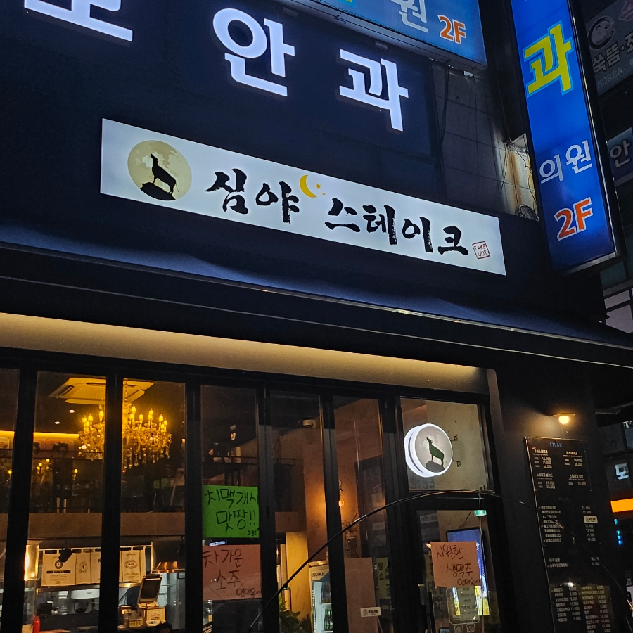
그리고 조리를 하는 주방이 훤히 보여서
얼마나 위생적인지 알 수 있었는데요 !
이렇게 신경을 쓰고 관리를 하는 곳이라
더욱 더 가보고 싶었던 것 같습니다.
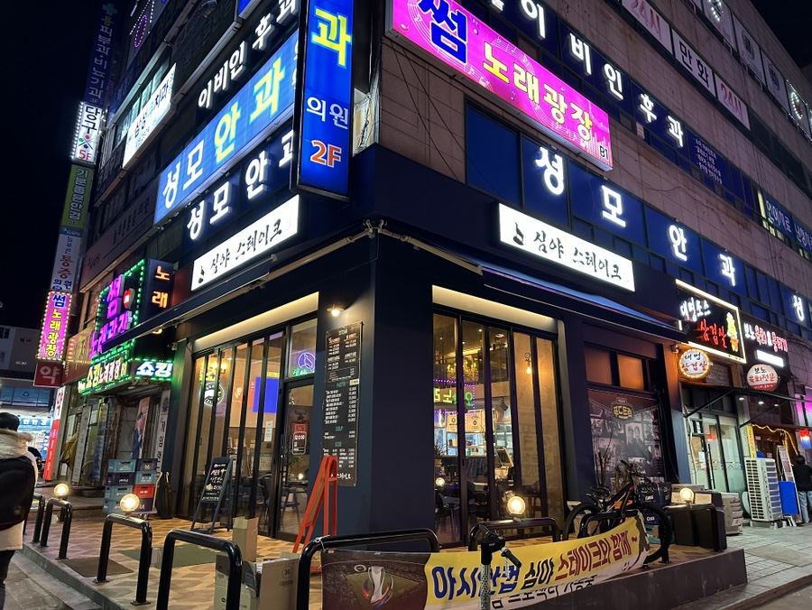
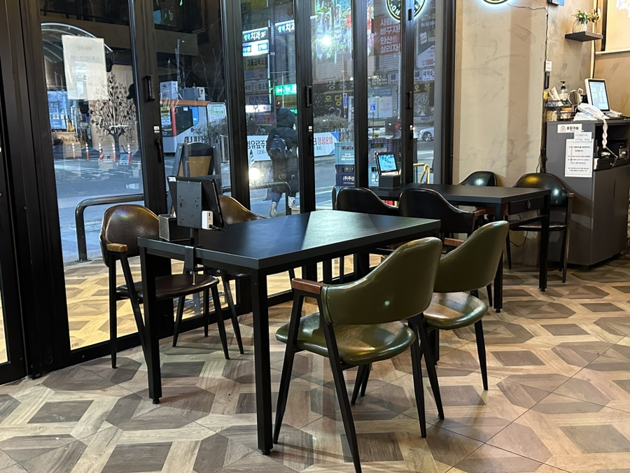
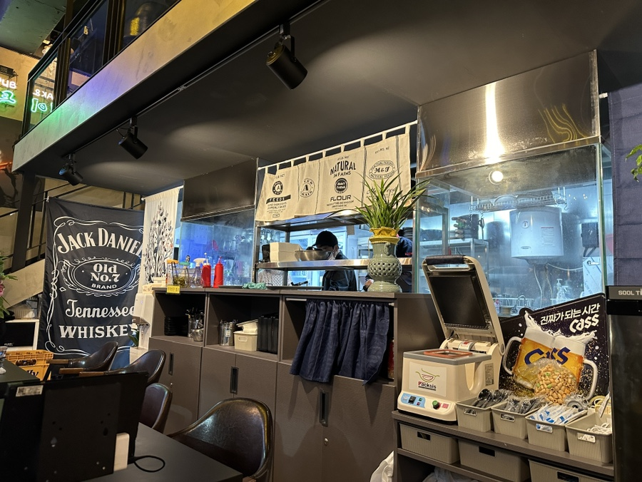
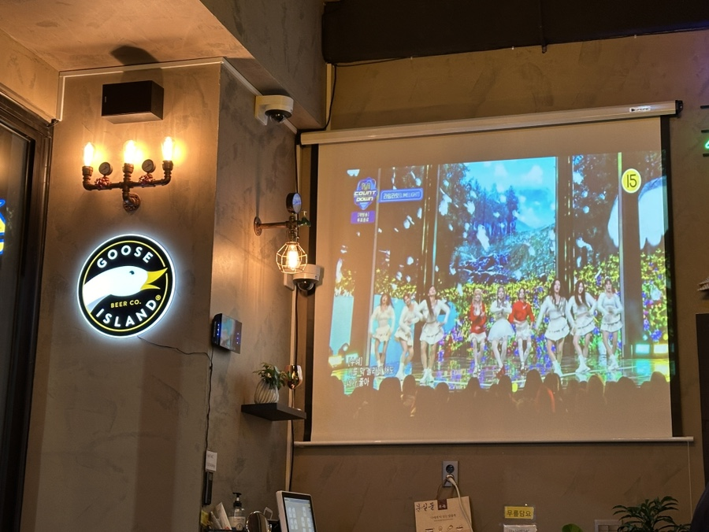
2층에 복층으로 되어있어서 모임을 가지기에도
좋았던 안산 스테이크 맛집이었어요.
통유리창으로 되어있어서 밖이 보이니,
개방감도 좋아서 답답한 느낌도 전혀 들지 않았죠.
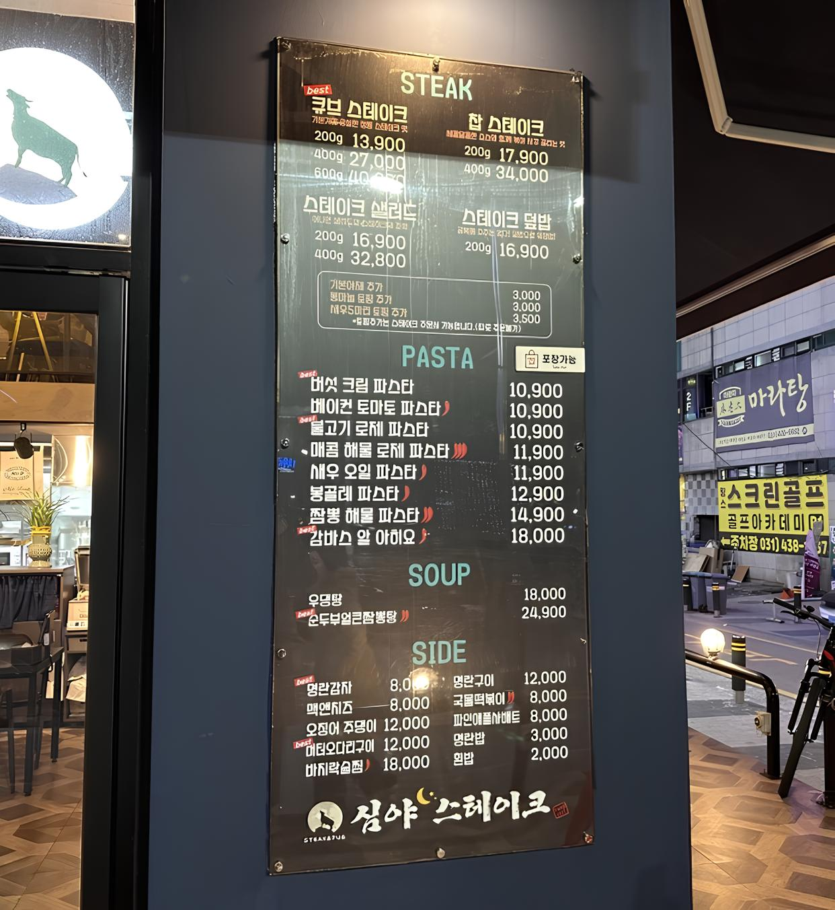
메뉴판이 있었는데요.
주로 스테이크 그리고 파스타를 메인으로 하는
상록수역 술집이었는데, 다양한 사이드도 있어서
근처에서 회식할 때 한번 와야겠단 생각을 했어요.
주문은 매장 내에 테이블마다 배치된 태블릿으로 가능합니다.
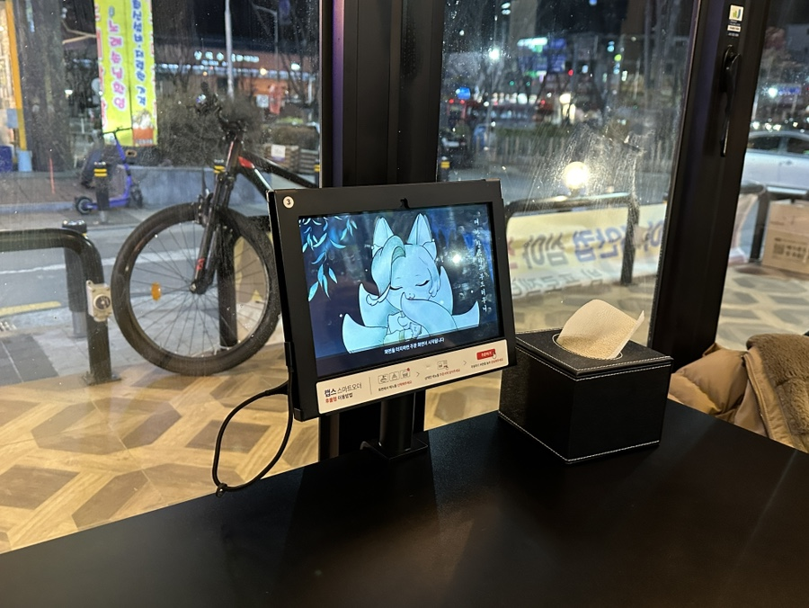
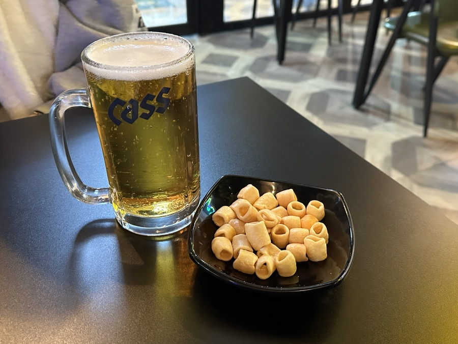
저희는 우선 큐브 스테이크와 해물짬뽕 파스타
이렇게 두 개와 시원한 생맥주를 주문하고 기다렸습니다.
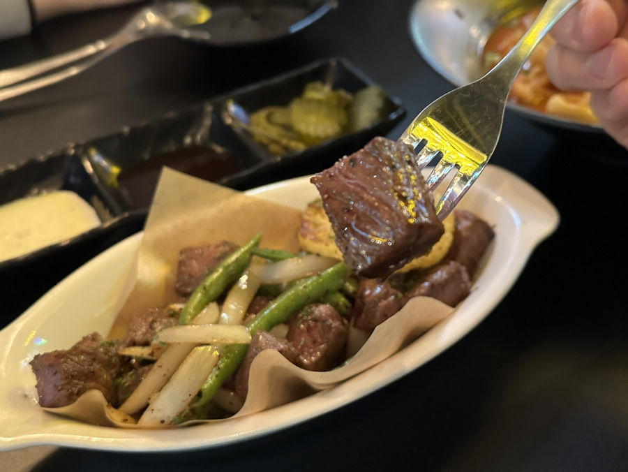
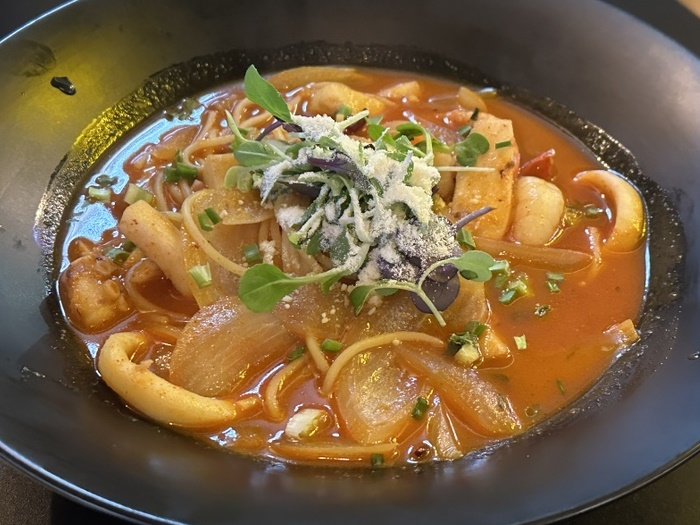
숙련된 요리사분들이 계셔서 주문한지 10분도 안 된 것 같았는데,
준비된 요리가 뛰어난 비주얼과 함께 저희 앞으로 나왔습니다 !
특히나 같이 곁들어진 데코도 정말 마음에 들었어요.
왜 안산 스테이크 먹으러 올 때 오는 곳인지 알겠네요 !
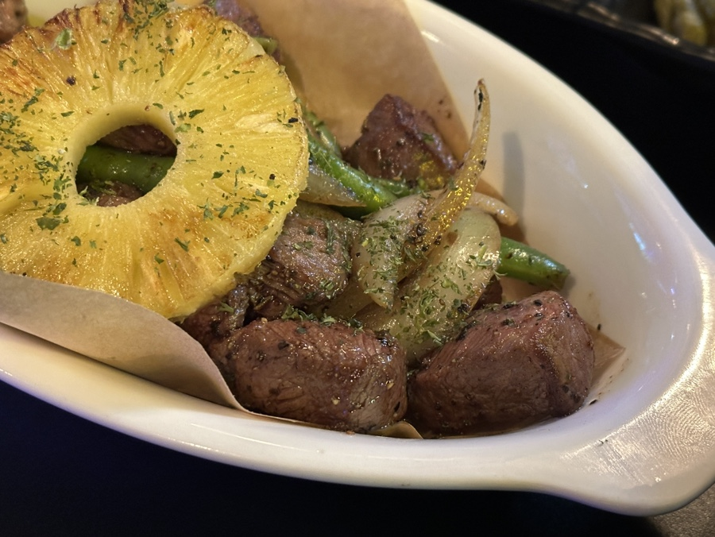
한입에 먹기 적당한 크기로 썰려져 있어서
남녀노소 누구나 맛있게 즐기기에 좋았는데요.
적당한 굽기의 안산 스테이크 그냥 지나칠 수 없죠.
아스파라거스, 양파, 파인애플까지
같이 구워진 가니쉬들은 함께 먹으면 일석이조에요.
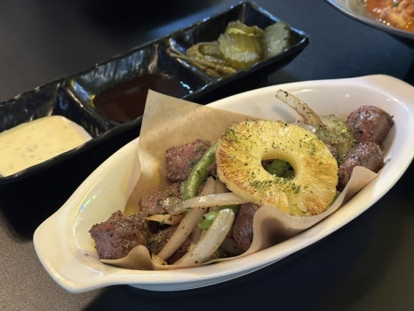
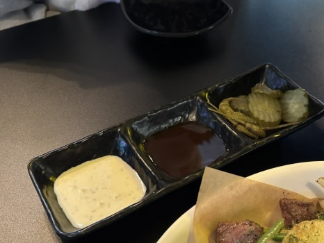
스테이크를 찍어 먹을 수 있는 소스도 두 가지가 있었는데,
하나는 A1 스테이크 소스, 하나는 마요 소스 였어요.
기본적으로 스테이크를 구울 때 간이 되어있어
따로 소스를 찍지 않고 고기 본연의 맛을 즐기는 것도
좋았던 것 중 하나에요. 전 가니쉬랑 같이 먹었어요.
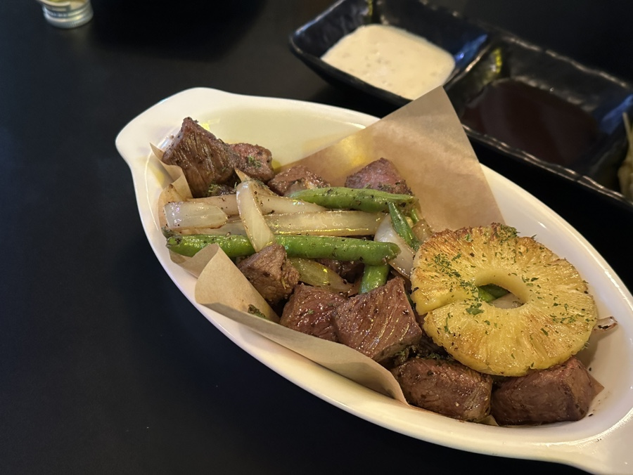
보기만 해도 맛있어 보였던 스테이크는 합격 !
다음번에 오면 중량 늘려서 먹고 싶을 정도로
굉장히 맛있게 즐길 수 있었던 안산 스테이크 맛집이었어요.
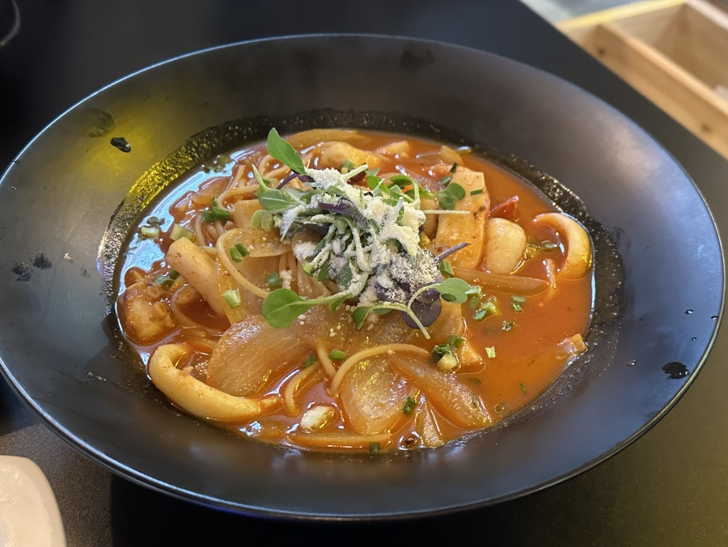
다음은 전날 먹은 술을 풀겠다며 먹었던
해물짬뽕 파스타였어요.
국물이 들어있는 파스타라 그런지 비주얼은
파스타의 느낌보다는 정말 해물짬뽕의 느낌이
강했지만, 한입 먹어보면 다를 거예요.
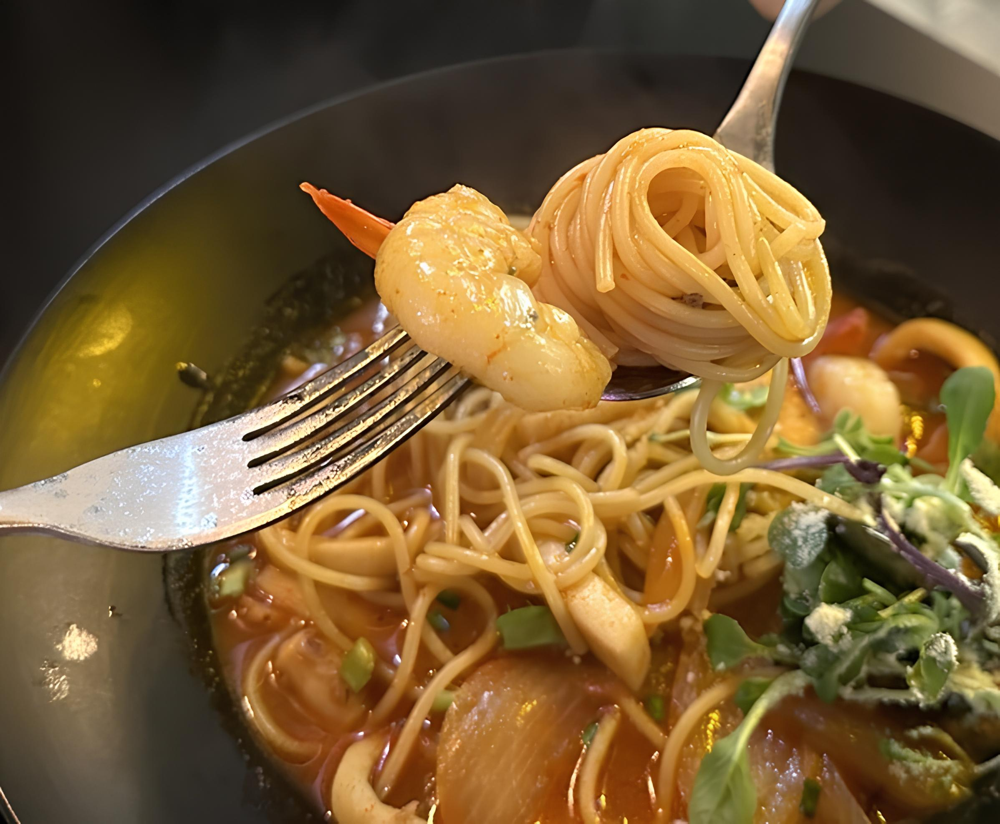
다양한 해산물이 있기 때문에 같이 곁들어먹으면
훨씬 더 해물짬뽕 파스타를 맛있게 즐길 수 있는데요.
약간 매콤하기 때문에 매운 걸 못 드신다면
다른 다양한 파스타도 있기 때문에 그걸로 선택하길 !
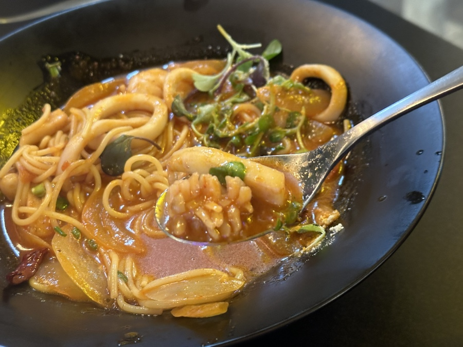
오징어의 종류도 많아서 씹는 재미까지 있어요.
상록수역 술집 다양한 곳들을 가봤지만,
스테이크와 파스타처럼 양식을 요리하면서 술집을 운영하는 곳은 몇 군데 못 봤는데,
오랫동안 기억에 남을 것 같은 생각이 들었던 심야스테이크 였습니다 !
감사합니다.
심야스테이크
주소 : 경기 안산시 상록구 본삼로 51
전화번호 : 0507-1412-0830
음식 종류 : 양식
가격대 : \10,000 ~ \50,000